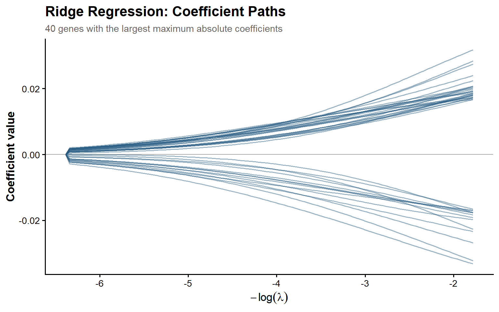
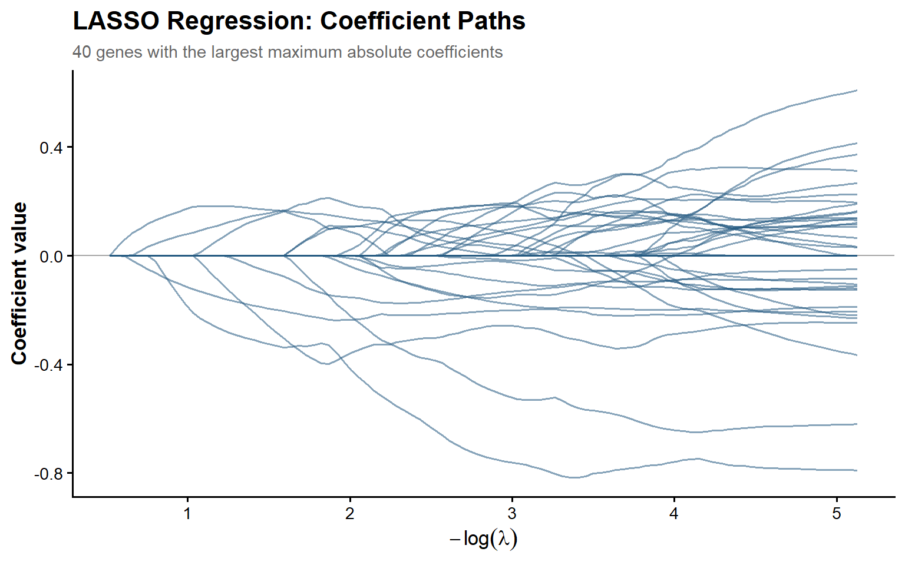
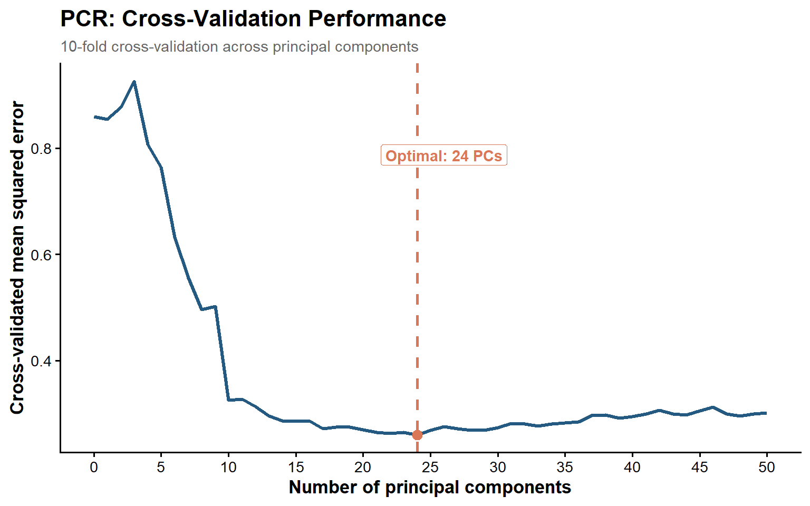

In this homework, we use gene-expression data to predict riboflavin production. The goal is to compare Ridge, LASSO, Elastic Net and Principal Component Regression (PCR) to see how they handle a large number of predictors and which gives the lowest prediction error. We use 10-fold cross-validation to evaluate the models.
6.2 Data Preparation
Show code
# Load the riboflavin dataset from our data folderriboflavin <-readRDS("data/riboflavin.rds")# Count observations (rows = participants/samples)n_obs <-nrow(riboflavin$x)# Count predictors (columns = gene-expression variables)n_pred <-ncol(riboflavin$x)
The riboflavin dataset contains 71 observations and 4088 gene-expression predictors. The outcome variable is riboflavin production.
Because the number of predictors exceeds the number of observations (p > n), this dataset presents a high-dimensional regression problem in which ordinary least squares (OLS) cannot uniquely estimate all regression coefficients.
6.3 Why Ordinary Least Squares (OLS) Fails
Show code
# Convert the predictor matrix into a data framedf <-as.data.frame(riboflavin$x)# Add riboflavin production as the outcome variabledf$y <- riboflavin$y# Fit OLS using all predictors (the dot means all other variables)ols_fit <-lm(y ~ ., data = df)# Extract the coefficients and count those reported as NAn_missing <-sum(is.na(coef(ols_fit)))
Interpretation. We fitted an OLS model using all 4,088 predictors and found that 4018 coefficients were returned as NA. This happens because we have more predictors than observations (4,088 vs. 71), so there isn’t enough information to estimate each coefficient uniquely. In other words, different combinations of coefficients could produce the same predictions.
6.4 Ridge Regression
Show code
# Load the package for regularized regressionlibrary(glmnet)# Set a seed so results can be reproducedset.seed(123)# Create 10 folds to reuse when comparing modelsfold_id <-sample(rep(1:10, length.out = n_obs))# Fit Ridge regression (alpha = 0) with 10-fold cross-validationridge_cv <-cv.glmnet(x = riboflavin$x, # Gene-expression predictorsy = riboflavin$y, # Riboflavin productionalpha =0, # Ridge regression (L2 penalty)foldid = fold_id # Use our 10 predefined folds)# Extract the two recommended penalty valuesridge_lambda_min <- ridge_cv$lambda.minridge_lambda_1se <- ridge_cv$lambda.1se
Using 10-fold cross-validation, the selected penalty values were:
Ridge regression performance across penalty strengths using 10-fold cross-validation.
Interpretation. The lowest prediction error occurred at the smallest lambda tested (orange line). As lambda increased, the model’s prediction error also increased, meaning stronger regularization did not improve performance. However, the 1-SE rule (green line) selected a larger lambda that shrinks the coefficients more while keeping prediction error relatively close to the minimum.
6.5 Ridge Coefficient Paths
Show code
# Extract coefficients across all lambda values (excluding intercept)ridge_beta <-as.matrix(ridge_cv$glmnet.fit$beta)ridge_lambda <- ridge_cv$glmnet.fit$lambda# Select 40 genes with the largest absolute coefficientstop_genes <-order(apply(abs(ridge_beta), 1, max),decreasing =TRUE)[1:40]# Organize the selected coefficients for plottingridge_paths <-data.frame(gene =rep(top_genes, times =length(ridge_lambda)),neg_log_lambda =rep(-log(ridge_lambda), each =40),coefficient =as.vector(ridge_beta[top_genes, ]))# Plot the coefficient pathsggplot(ridge_paths,aes(x = neg_log_lambda, y = coefficient, group = gene)) +geom_hline(yintercept =0, color ="grey65", linewidth =0.4) +geom_line(color ="#245A81", alpha =0.45, linewidth =0.6) +labs(title ="Ridge Regression: Coefficient Paths",subtitle ="40 genes with the largest maximum absolute coefficients",x =expression(-log(lambda)),y ="Coefficient value" ) +theme_classic(base_size =13) +theme(plot.title =element_text(face ="bold", size =16),plot.subtitle =element_text(color ="grey40", size =11),axis.title =element_text(face ="bold"),panel.grid.minor =element_blank() )

Ridge coefficient paths for the 40 genes with the largest maximum absolute coefficients.
Interpretation. As lambda increases, the coefficients shrink toward zero, showing how Ridge reduces the influence of individual predictors. However, the coefficients generally remain nonzero, meaning Ridge retains the predictors rather than removing them.
6.6 LASSO Regression
Show code
# Fit LASSO using the same 10 CV folds as Ridgelasso_cv <-cv.glmnet(x = riboflavin$x,y = riboflavin$y,alpha =1, # LASSO uses the L1 penaltyfoldid = fold_id # Same folds for a fair comparison)# Extract the selected penalty valueslasso_lambda_min <- lasso_cv$lambda.minlasso_lambda_1se <- lasso_cv$lambda.1se# Get the coefficients at lambda.1se, excluding the interceptlasso_coef <-as.matrix(coef(lasso_cv, s ="lambda.1se"))[-1, 1]# Count genes with nonzero coefficients (selected predictors)n_lasso_selected <-sum(lasso_coef !=0)
LASSO prediction error across penalty strengths using 10-fold cross-validation.
Interpretation. LASSO achieved its lowest prediction error at a relatively small lambda. The 1-SE rule selected a larger penalty with only a small increase in error, allowing the model to retain fewer predictors while maintaining similar predictive performance. Stronger penalties beyond this point increased prediction error.
6.7 LASSO Coefficient Paths
Show code
# Extract gene coefficients and lambda values from the fitted LASSOlasso_beta <-as.matrix(lasso_cv$glmnet.fit$beta)lasso_lambda <- lasso_cv$glmnet.fit$lambda# Select the 40 genes with the largest absolute coefficientstop_lasso_genes <-order(apply(abs(lasso_beta), 1, max),decreasing =TRUE)[1:40]# Organize coefficients for plottinglasso_paths <-data.frame(gene =rep(rownames(lasso_beta)[top_lasso_genes],times =length(lasso_lambda)),neg_log_lambda =rep(-log(lasso_lambda), each =40),coefficient =as.vector(lasso_beta[top_lasso_genes, ]))# Plot how coefficients change as lambda variesggplot(lasso_paths,aes(x = neg_log_lambda, y = coefficient, group = gene)) +geom_hline(yintercept =0, color ="grey65", linewidth =0.4) +geom_line(color ="#245A81", alpha =0.55, linewidth =0.7) +labs(title ="LASSO Regression: Coefficient Paths",subtitle ="40 genes with the largest maximum absolute coefficients",x =expression(-log(lambda)),y ="Coefficient value" ) +theme_classic(base_size =13) +theme(plot.title =element_text(face ="bold", size =16),plot.subtitle =element_text(color ="grey40", size =11),axis.title =element_text(face ="bold"),panel.grid.minor =element_blank(),plot.caption =element_text(color ="grey40", hjust =0) )

LASSO coefficient paths across penalty strengths.
Interpretation. As lambda increases, more coefficients become exactly zero, meaning LASSO removes predictors from the model. Unlike Ridge, which only shrinks coefficients toward zero, LASSO also performs variable selection.
6.8 Elastic Net Regression
Show code
library(gt)# Test three mixtures of Ridge (L2) and LASSO (L1)# Higher alpha = more emphasis on LASSOen_alphas <-c(0.25, 0.50, 0.75)# Fit one Elastic Net model for each alpha# For each model, 10-fold CV tests different lambda values# We reuse the same folds to make the comparison consistenten_fits <-lapply(en_alphas, function(a) {cv.glmnet(x = riboflavin$x, # Gene-expression predictorsy = riboflavin$y, # Riboflavin productionalpha = a, # Current L1/L2 mixturefoldid = fold_id # Same 10 CV folds )})# For each alpha, extract:# 1. Lambda that minimizes cross-validation error# 2. Lowest cross-validation mean squared erroren_results <-data.frame(alpha = en_alphas,lambda_min =sapply(en_fits, function(m) m$lambda.min),min_cv_mse =sapply(en_fits, function(m) min(m$cvm)))# Create a results tableen_results |>gt() |>tab_header(title ="Elastic Net Model Comparison") |>fmt_number(columns = alpha, decimals =2) |>fmt_number(columns =c(lambda_min, min_cv_mse),decimals =3 ) |>cols_label(alpha ="Alpha (α)",lambda_min ="Optimal λ",min_cv_mse ="Minimum CV-MSE" ) |>tab_options(table.font.size =px(13),heading.title.font.size =px(16),column_labels.font.weight ="bold" )
Elastic Net Model Comparison
Alpha (α)
Optimal λ
Minimum CV-MSE
0.25
0.167
0.220
0.50
0.084
0.217
0.75
0.053
0.213
Interpretation. Elastic Net achieved the lowest prediction error with α = 0.75 (CV-MSE = 0.213). However, all three alpha values produced similar errors (0.213–0.220), suggesting that the balance between Ridge and LASSO had little impact on prediction performance in this comparison.
Show code
# Identify the Elastic Net model with the lowest CV-MSEbest_en <- en_fits[[which.min(en_results$min_cv_mse)]]# Extract its coefficients at lambda.1se (excluding intercept)en_coef <-as.matrix(coef(best_en, s ="lambda.1se"))[-1, 1]# Count genes retained (coefficients not equal to zero)n_en_selected <-sum(en_coef !=0)
At the 1-SE penalty:
Elastic Net (α = 0.75): 36 genes retained.
LASSO (α = 1): 32 genes retained.
Elastic Net retained slightly more predictors than LASSO (36 vs. 32) suggesting a less sparse model.
6.9 Principal Component Regression (PCR)
Show code
# Load the package for principal component regressionlibrary(pls)# Fit PCR using up to 50 principal components# Scale predictors so genes with larger values don't dominate# Use the same 10 CV folds as our previous modelspcr_fit <-pcr( y ~ x,data = riboflavin,scale =TRUE,ncomp =50,validation ="CV",segments =split(seq_len(n_obs), fold_id))# Extract cross-validation MSE for 0 to 50 componentspcr_mse <-drop(MSEP(pcr_fit, estimate ="CV")$val)# Find the number of components with the lowest CV-MSE# Subtract 1 because the first result uses 0 componentsk_opt <-which.min(pcr_mse) -1
Using 10-fold cross-validation, the optimal number of principal components was 24, with a CV-MSE of 0.26.
Show code
# Organize the CV errors for models using 0 to 50 componentspcr_results <-data.frame(ncomp =0:(length(pcr_mse) -1),mse =as.numeric(pcr_mse))# Identify the model with the lowest prediction errorpcr_best <-subset(pcr_results, ncomp == k_opt)# Plot prediction error against the number of componentsggplot(pcr_results, aes(x = ncomp, y = mse)) +geom_line(color ="#245A81", linewidth =1.2) +geom_point(data = pcr_best,color ="#D97757", size =3 ) +geom_vline(xintercept = k_opt,color ="#D97757", linetype ="dashed",linewidth =0.9 ) +# Label the optimal number of componentsannotate("label",x = k_opt +2,y =max(pcr_results$mse) *0.85,label =paste0("Optimal: ", k_opt, " PCs"),fill ="white",color ="#D97757",label.size =0,fontface ="bold",size =3.8) +scale_x_continuous(breaks =seq(0, 50, 5)) +labs(title ="PCR: Cross-Validation Performance",subtitle ="10-fold cross-validation across principal components",x ="Number of principal components",y ="Cross-validated mean squared error" ) +theme_classic(base_size =13) +theme(plot.title =element_text(face ="bold", size =16),plot.subtitle =element_text(color ="grey40", size =11),axis.title =element_text(face ="bold"),panel.grid.minor =element_blank() )

PCR prediction error across different numbers of principal components.
Interpretation. Prediction error decreased as we added more principal components, reaching its minimum at 24 components. Beyond this point, adding more components slightly increased the error. This shows that 24 components captured the most useful information for prediction within the range tested without needing to include all 4,088 predictors separately.
Show code
# Convert the PCR coefficients back to the original gene scale# Use the optimal number of components selected by CVpcr_beta <-as.vector(coef(pcr_fit, ncomp = k_opt, intercept =FALSE))# Count the coefficients recoveredn_pcr_coef <-length(pcr_beta)
The PCR model used 24 principal components, which were back-transformed into 4088 coefficients corresponding to the original gene-expression predictors.
Show code
# Extract the intercept from our PCR model# The intercept is the starting value of the predictionpcr_intercept <-as.numeric(coef(pcr_fit, ncomp = k_opt, intercept =TRUE)[1, 1, 1])# Predict the outcome for the first observation# Multiply each gene value by its coefficient, add them up,# and include the interceptpcr_pred_first <- pcr_intercept +sum(riboflavin$x[1, ] * pcr_beta)
Using 24 principal components, the predicted log riboflavin production rate for the first observation was -5.672.
Although PCR uses only 24 components, we still need all 4,088 gene measurements to calculate them, since each component is a combination of the original predictors.
6.10 Model Comparison
Show code
# Collect the lowest CV-MSE from each method# All models were evaluated using 10-fold cross-validationmodel_comparison <-data.frame(method =c("Ridge", "LASSO", "Elastic Net", "PCR"),cv_mse =c(min(ridge_cv$cvm), # Ridge: best lambdamin(lasso_cv$cvm), # LASSO: best lambdamin(en_results$min_cv_mse), # Elastic Net: best alpha and lambdamin(pcr_mse) # PCR: optimal number of components ))# Create a table and highlight the best modelmodel_comparison |>gt() |>tab_header(title ="Comparison of Regularization Methods") |>fmt_number(columns = cv_mse, decimals =3) |>cols_label(method ="Method",cv_mse ="Minimum CV-MSE" ) |>tab_style(style =cell_text(weight ="bold", color ="#245A81"),locations =cells_body(rows = cv_mse ==min(cv_mse)) ) |>tab_options(table.font.size =px(13),heading.title.font.size =px(16),column_labels.font.weight ="bold" )
Comparison of Regularization Methods
Method
Minimum CV-MSE
Ridge
0.269
LASSO
0.210
Elastic Net
0.213
PCR
0.260
Interpretation. LASSO had the lowest cross-validation error (MSE = 0.210), followed closely by Elastic Net (0.213). We might expect LASSO to perform better than Ridge if only a small number of genes are useful for prediction, since LASSO can remove less useful predictors. Our results are consistent with this expectation, although we cannot be sure how many genes are really important. PCR and Ridge had higher prediction errors.